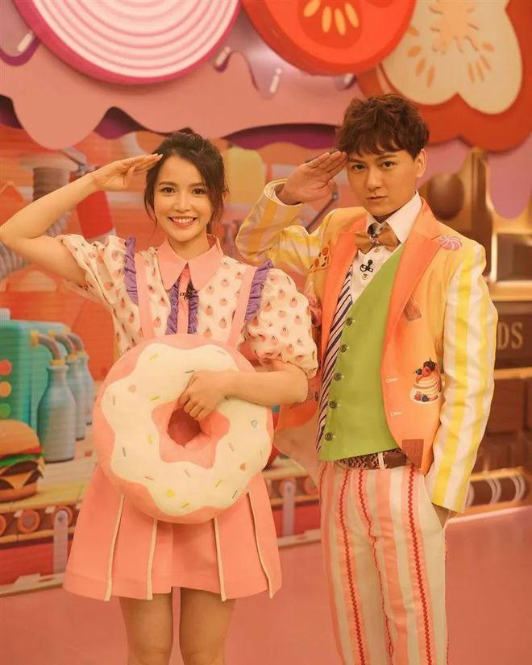
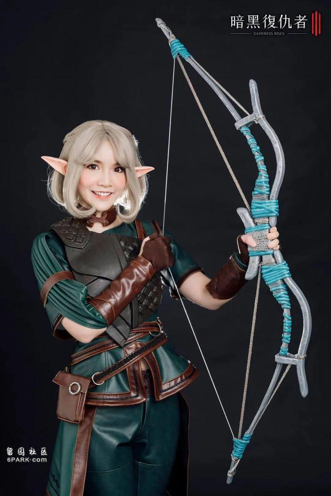

TVB前港姐陈若思入行仅仅三四年的时间就凭借去年的一部《新闻女王》而打响了知名度，长相清纯的她有着魔鬼般的身材，每次现身都穿的很性感，因此也是收获了不少宅男粉丝的喜爱。
近日，陈若思难得放假，她抽出时间与家人一起去度假，期间还玩了水上乐园，事后将动态分享到社交平台，也是吸引了无数网民的关注。
从照片中看得出，陈若思当天化了一个精致的妆容，头发只是简单的扎了一个高马尾，很有邻家女孩的感觉，28岁的她身材超棒，四肢纤细，腰间几乎没有多余的赘肉，马甲线更是若隐若现。
在水上乐园玩耍时，陈若思穿的很性感，白色的比基尼泳衣可以说非常抢镜，在玩水时陈若思没有顾及形象，该湿身的时候也是全身湿透，澎湃的上围让人羡慕。
用网民的话说，陈若思虽然瘦弱，但是她整体的身材比例相当好，尤其是前凸后翘的身形着实吸睛，加上其面容姣好，难怪受到大台高层的青睐，出镜的机会越来越多。
据悉，这次放松完后陈若思将会被安排新的工作，此前她还加盟了《刑侦12》的剧组，虽然剧中的角色戏份不多，可是一出场也是相当亮眼，相信剧集播出后，陈若思的人气会有所提升。
熟悉陈若思的观众都知道，四年前她在家人的鼓励下参选了港姐，虽然没有进入三甲，但是总算打入了十强，其讨喜的外形被高层一眼看中，之后顺利的与大台签约，入行后她开始在节目中担任主持的工作。

尽管陈若思没有什么主持功底，但是她很有上进心，很多不懂的地方她也是积极询问相关的专业人士，所以很快就凭借资讯节目冒出头，近年更是在剧集中有突出的表现。
此前陈若思参演了《痞子殿下》这部剧，不过并没有获得一定的知名度，而且观众对其也表示陌生，直到去年《新闻女王》的播出，陈若思才总算有了小小的名气。
戏里与陈若思有最多对手戏的是视后佘诗曼和小花何依婷，没有多少表演经验的陈若思与佘诗曼对戏时显然底气不足，但是好在得到对方的帮助，所以对于这位前辈，陈若思也是心存感激。
剧中陈若思逃跑时不幸出了意外身亡，相信那一幕观众也是至今难忘，显然陈若思凭借这部《新闻女王》成功让观众记住了她，相信假以时日，在几部剧的磨练下，陈若思一定会有更好的表现。

其实在入行前陈若思在动漫圈很有名，有着翻版杨丞琳的称号，她的粉丝数过百万，而且还曾在富三代的公司打工，两人更是因此而传出绯闻，对此陈若思并没有冷处理，而是第一时间站出来回应，称与对方只是上下属的关系，希望大家不要误会。
由此可见，陈若思并不打算借助男方炒作，这种做法还是让人为之竖起大拇指的，不管怎样，小编都希望陈若思将来可以发展的越来越好。